Variables
variables.RmdIntroduction
This document provides a comprehensive reference for all the environmental variables available in the envar R package and the sources from which they can be retrieved. Each section describes a data source, lists the available variables with their synonyms, provides usage examples, and includes proper citations. Sources are grouped based on the category to which they belong (e.g. land cover, climate, etc.). For each source, the available variables are listed alongside synonyms that can be used inside the vars argument interchangeably (except for the chelsa and worldclim functions that do not allow the use of synonyms and the exact codes must be used).
The first step is to load the library. When executing this command,
other five packages (dplyr, terra,
sf, corrplot, usdm) will be
automatically loaded to ensure the full functionality of the
package.
Climate
CHELSA
This function downloads, processes, and extracts variables from the CHELSA (Climatologies at High Resolution for the Earth’s Land Surface Areas) dataset (Karger et al. 2017) and the CHELSA BIOCLIM+ dataset (Brun et al. 2022).
The following variables are available. Please note the distinction between “Monthly” time-series data and “Climatologies”. There is only one code-name for each variable and no working synonyms, differently from most other functions of the package, and in parentheses is the meaning. Climatologies are available for 30-year periods: 1981-2010, 2011-2040, 2041-2070, 2071-2100.
Available variables
Monthly time-series (Available years: 1980 - 2018):
- 1 - pr (Precipitation amount; mass per unit area)
- 2 - tas (Mean daily air temperature at 2 meters)
- 3 - tasmax (Mean daily maximum air temperature at 2 meters)
- 4 - tasmin (Mean daily minimum air temperature at 2 meters)
- 5 - hurs (Near-surface relative humidity)
- 6 - clt (Total cloud cover at surface; considers entire atmospheric column)
- 7 - sfcWind (Near-surface wind speed at 10m above ground)
- 8 - vpd (Vapor pressure deficit)
- 9 - rsds (Surface downwelling shortwave flux in air)
- 10 - pet_penman (Potential evapotranspiration; Penman-Monteith equation)
- 11 - cmi (Climate Moisture Index)
- 12 - swb (Site water balance; cumulative available water)
Cloud Cover climatologies:
- 13 - clt_mean (Mean monthly total cloud cover over 1 year)
- 14 - clt_max (Maximum monthly total cloud cover)
- 15 - clt_min (Minimum monthly total cloud cover)
- 16 - clt_range (Annual range of monthly total cloud cover)
Climate Moisture Index climatologies:
- 17 - cmi_mean (Mean monthly climate moisture index)
- 18 - cmi_max (Maximum monthly climate moisture index; highest surplus)
- 19 - cmi_min (Minimum monthly climate moisture index; highest deficit)
- 20 - cmi_range (Annual range of monthly climate moisture index)
Relative humidity climatologies:
- 21 - hurs_mean (Mean monthly near-surface relative humidity)
- 22 - hurs_max (Maximum monthly near-surface relative humidity)
- 23 - hurs_min (Minimum monthly near-surface relative humidity)
- 24 - hurs_range (Annual range of monthly near-surface relative humidity)
Potential evapotranspiration climatologies:
- 25 - pet_penman_mean (Mean monthly PET)
- 26 - pet_penman_max (Maximum monthly PET)
- 27 - pet_penman_min (Minimum monthly PET)
- 28 - pet_penman_range (Annual range of monthly PET)
Solar radiation climatologies:
- 29 - rsds_mean (Mean monthly surface downwelling shortwave flux)
- 30 - rsds_max (Maximum monthly surface downwelling shortwave flux)
- 31 - rsds_min (Minimum monthly surface downwelling shortwave flux)
- 32 - rsds_range (Annual range of monthly surface downwelling shortwave flux)
Wind speed climatologies:
- 33 - sfcWind_mean (Mean monthly near-surface wind speed)
- 34 - sfcWind_max (Maximum monthly near-surface wind speed)
- 35 - sfcWind_min (Minimum monthly near-surface wind speed)
- 36 - sfcWind_range (Annual range of monthly near-surface wind speed)
Vapor pressure deficit climatologies:
- 37 - vpd_mean (Mean monthly vapor pressure deficit)
- 38 - vpd_max (Maximum monthly vapor pressure deficit)
- 39 - vpd_min (Minimum monthly vapor pressure deficit)
- 40 - vpd_range (Annual range of monthly vapor pressure deficit)
Growing season characteristics (TREELIM model):
- 41 - gsl (Growing season length; days) *Note: Corrected from ‘gls’
- 42 - gsp (Accumulated precipitation during growing season)
- 43 - gst (Mean temperature of the growing season)
- 44 - fgd (First day of the growing season; Julian day)
- 45 - lgd (Last day of the growing season; Julian day)
Growing Degree Days (GDD):
46 - gdd0 (Heat sum of all days > 0°C accumulated over 1 year)
47 - gdd5 (Heat sum of all days > 5°C accumulated over 1 year)
48 - gdd10 (Heat sum of all days > 10°C accumulated over 1 year)
49 - ngd0 (Number of days with tas > 0°C)
50 - ngd5 (Number of days with tas > 5°C)
51 - ngd10 (Number of days with tas > 10°C)
52 - gdgfgd0 (First growing degree day > 0°C; Julian day)
53 - gdgfgd5 (First growing degree day > 5°C; Julian day)
54 - gdgfgd10 (First growing degree day > 10°C; Julian day)
55 - gddlgd0 (Last growing degree day > 0°C; Julian day)
56 - gddlgd5 (Last growing degree day > 5°C; Julian day)
57 - gddlgd10 (Last growing degree day > 10°C; Julian day)
Snow and frost climatologies:
- 58 - scd (Snow cover days; count)
- 59 - swe (Snow water equivalent; accumulated amount of liquid water if snow melted)
- 60 - fcf (Frost change frequency; events where tmin/tmax cross 0°C)
Biological productivity:
- 61 - npp (Net primary productivity; g C m^-2 yr^-1)
Climate classifications (Köppen-Geiger & others):
- 62 - kg0 (Köppen-Geiger climate category)
- 63 - kg1 (Köppen-Geiger without As/Aw differentiation)
- 64 - kg2 (Köppen-Geiger after Peel et al. 2007)
- 65 - kg3 (Wissmann 1939 classification)
- 66 - kg4 (Thornthwaite 1931 classification)
- 67 - kg5 (Troll-Pfaffen classification)
It is necessary to specify also the years as a distinct argument. If specified as a range (e.g. “1981-2010”) the average of those years is downloaded, otherwise if a single year is specified, the variables will refer to that year. With the argument “months” (numeric vector from 1 to 12) it is also possible to download data only for one or multiple specified months. If this is parameter is not specified, 12 months will be downloaded as 12 distinct layers. When downloading future variables across all possible CHELSA downloads, it is also necessary to specify the general circulation model(s) within the “gcm” argument, the representation concentration pathway(s) with “rcp”, and the shared socioeconomic pathway with the “ssp” argument. If the year(s) and gcm(s) and ssp(s) are not specified properly or not specified at all, the download will not work.
plot(processed[[1]])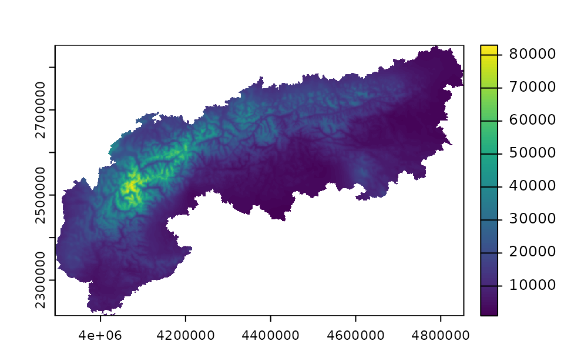
WorldClim
This function downloads, processes, and extracts variables from the WorldClim climate dataset (Fick & Hijmans 2017). Each variable corresponds to a global raster representing climate variables at approximately 1-km resolution. It supports both Historical (v2.1, 1970-2000) and Future (CMIP6) data.
Available variables:
Temperature:
- tmin - min temp
- tmax - max temp
- tavg - average temp
Precipitation:
- prec - precipitation, pr
Physical:
- srad - solar radiation
- wind - wind speed
- vapr - water vapor
- elev - elevation
Bioclimatic:
- bio - All 19 bioclimatic variables
- bio1 - bio19 - Specific bioclimatic variables
Historical:
- 1970-2000 (or “historical”)
Future:
- 2021-2040
- 2041-2060
- 2061-2080
- 2081-2100
Climate zones
This function downloads, processes, and extracts variables from the High-resolution (1 km) Köppen-Geiger maps dataset (Beck et al. 2023). Each variable corresponds to a global GeoTIFF representing climate classification zones based on historical data or future CMIP6 projections.
Available variables:
- zones - koppengeiger, climate, climatezones, koppen, koppen geiger
Time periods (“years” argument):
Historical:
- 1901-1930
- 1931-1960
- 1961-1990
- 1991-2020 (default)
Future:
- 2041-2070
- 2071-2099
SSP Scenarios (“ssp” argument, required for future periods):
- 119 (SSP1-1.9)
- 126 (SSP1-2.6)
- 245 (SSP2-4.5)
- 370 (SSP3-7.0)
- 434 (SSP4-3.4)
- 460 (SSP4-6.0)
- 585 (SSP5-8.5)
processed <- var_get(shape = Alps, crs = 3035) %>%
climatezones()
plot(processed[[1]])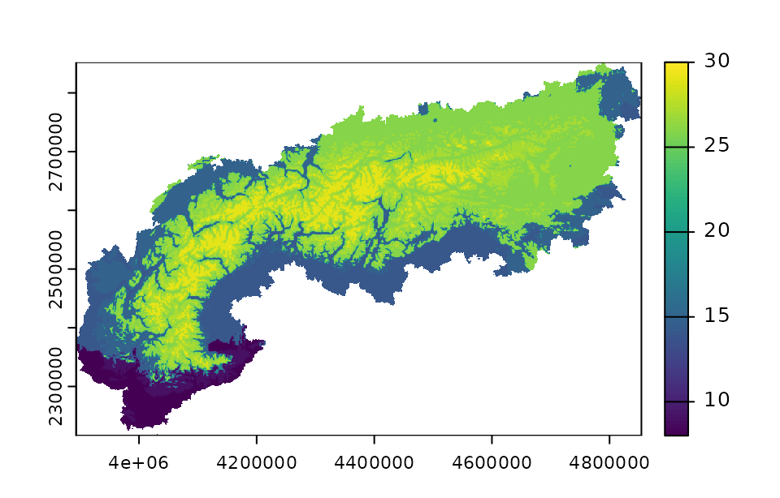
Cloud cover
This function downloads, processes, and extracts variables from the EarthEnv Global Cloud Cover dataset (Wilson & Jetz 2016). Each variable corresponds to a global Cloud-Optimized GeoTIFF (COG) representing cloud cover dynamics.
Available variables:
Metrics:
- MODCF_CloudForestPrediction - cloud forest prediction, cloud forest, cfp
- MODCF_interannualSD - inter-annual variability, interannual sd, interannual variability
- MODCF_intraannualSD - intra-annual variability, intraannual sd, intraannual variability
- MODCF_meanannual - mean annual, annual mean, annual
- MODCF_spatialSD_1deg - spatial variability, spatial sd, spatial sd 1deg
Seasonality:
- MODCF_seasonality_concentration - seasonality concentration, concentration
- MODCF_seasonality_rgb - seasonality rgb, rgb
- MODCF_seasonality_theta - seasonality theta, theta
- MODCF_seasonality_visct - seasonality single band, seasonality visct, seasonality color
Monthly means:
- MODCF_monthlymean_01 - january mean, january, jan
- MODCF_monthlymean_02 - february mean, february, feb
- MODCF_monthlymean_03 - march mean, march, mar
- MODCF_monthlymean_04 - april mean, april, apr
- MODCF_monthlymean_05 - may mean, may
- MODCF_monthlymean_06 - june mean, june, jun
- MODCF_monthlymean_07 - july mean, july, jul
- MODCF_monthlymean_08 - august mean, august, aug
- MODCF_monthlymean_09 - september mean, september, sep
- MODCF_monthlymean_10 - october mean, october, oct
- MODCF_monthlymean_11 - november mean, november, nov
- MODCF_monthlymean_12 - december mean, december, dec
processed <- var_get(shape = Alps, crs = 3035) %>%
cloudcover(vars = c("mean annual"))
plot(processed[[1]])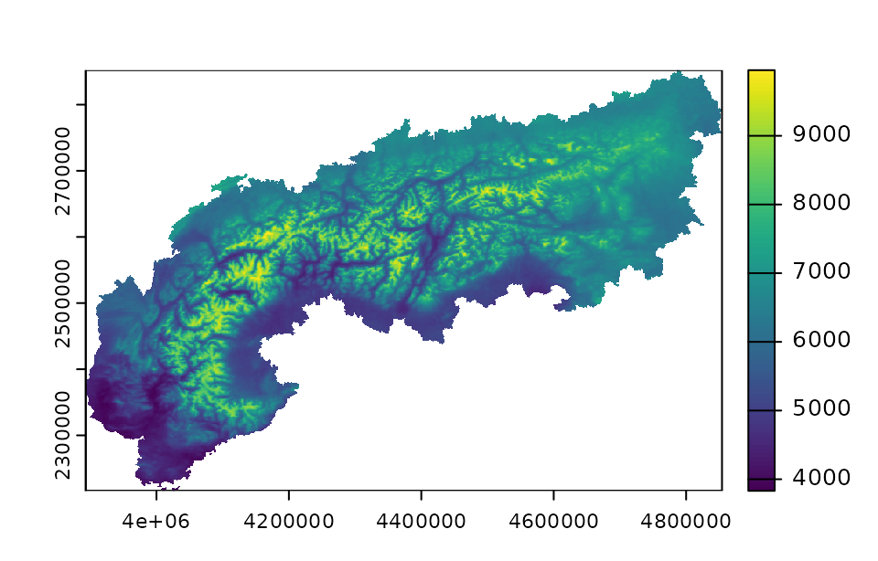
Aridity
This function downloads, processes, and extracts variables from the Global Aridity Index and ET0 Database v3 (Zomer et al. 2022). Each variable corresponds to a global raster representing aridity index or potential evapotranspiration values.
Available variables:
Annual variables:
- ai_v3_yr.tif - aridity index annual, ai annual, aridity annual, ai year
- et0_v3_yr.tif - et0 annual, potential evapotranspiration annual, evapotranspiration annual, et0 year
- et0_v3_yr_sd.tif - et0 standard deviation, et0 sd, et0 variability, et0 annual sd
Monthly Aridity Index (ai_v3_01.tif to ai_v3_12.tif):
- ai_v3_01.tif - aridity index january, ai january, ai jan, ai 1
- ai_v3_02.tif - aridity index february, ai february, ai feb, ai 2
- … (continues for all 12 months)
Monthly ET0 (et0_v3_01.tif to et0_v3_12.tif):
- et0_v3_01.tif - et0 january, potential evapotranspiration january, et0 jan, et0 1
- et0_v3_02.tif - et0 february, potential evapotranspiration february, et0 feb, et0 2
- … (continues for all 12 months)
processed <- var_get(shape = Alps, crs = 3035) %>%
aridity(vars = c("aridity index annual", "et0 january"))
plot(processed[[1]])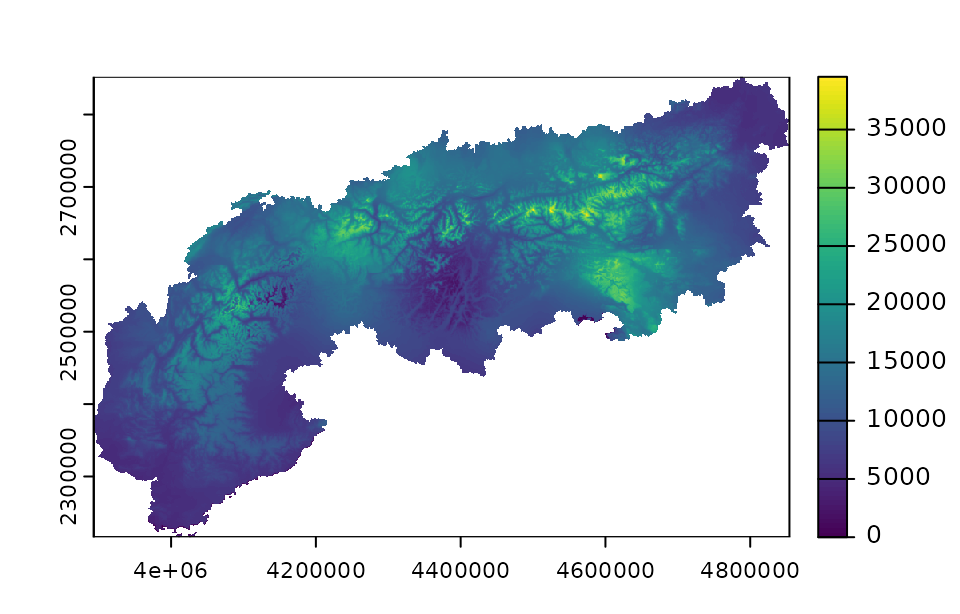
Topography
This function downloads, processes, and extracts variables from the EarthEnv Topography dataset (Amatulli et al. 2018). This dataset provides global, cross-scale topographic variables suitable for biodiversity and ecosystem modeling.
Available variables:
- elevation - dem, height, alt, altitude
- slope - slope
- aspect - aspect
- roughness - rough
- tri - terrain ruggedness index, ruggedness
- tpi - topographic position index, position
- vrm - vector ruggedness measure
- pcurv - profile curvature, profile curve
- tcurv - tangential curvature, tangential curve
- eastness - east
- northness - north
Additional parameters:
- algorithm - Aggregation method/algorithm to use. Options: “md” (median, default), “mn” (mean), “min”, “max”, “sd”.
- topo_source - Data source. Options: “GMTED” (default) or “SRTM”.
processed <- var_get(shape = Alps, crs = 3035) %>%
topography(vars = c("elevation", "slope"))
plot(processed[[1]])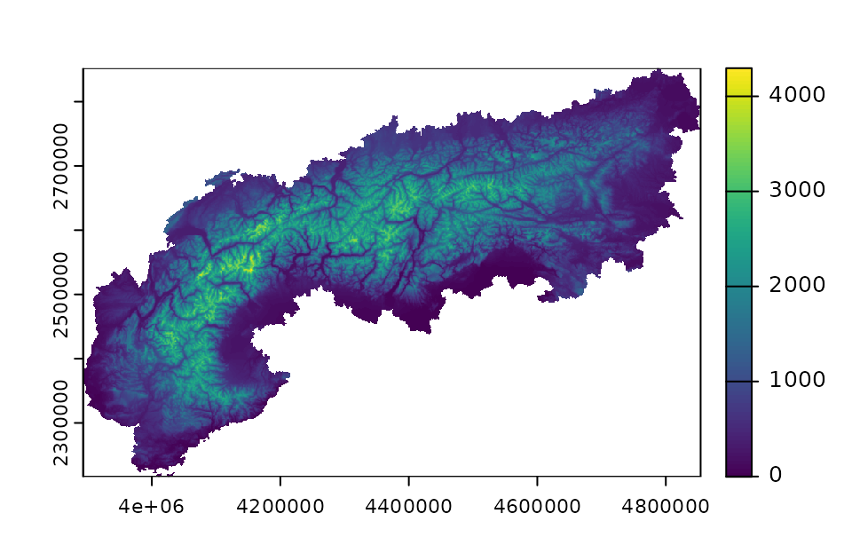
Land cover
EarthEnv land cover
This function downloads, processes, and extracts variables from the EarthEnv Consensus Land Cover dataset (Tuanmu & Jetz 2014). Each variable corresponds to a global raster representing a specific land cover class at 1 km resolution.
Available variables:
- consensus_full_class_1 - evergreen deciduous needleleaf trees, needleleaf trees, needleleaf, conifer
- consensus_full_class_2 - evergreen broadleaf trees, evergreen broadleaf, broadleaf evergreen
- consensus_full_class_3 - deciduous broadleaf trees, deciduous broadleaf, broadleaf deciduous
- consensus_full_class_4 - mixed other trees, mixed trees, other trees, mixed forest
- consensus_full_class_5 - shrubs, shrubland, shrub
- consensus_full_class_6 - herbaceous vegetation, herbaceous, grassland, grass, herbs
- consensus_full_class_7 - cultivated and managed vegetation, cultivated, managed vegetation, agriculture, crops, cropland
- consensus_full_class_8 - regularly flooded vegetation, flooded vegetation, flooded, wetland
- consensus_full_class_9 - urban built up, urban, built up, built-up, artificial surface
- consensus_full_class_10 - snow ice, snow, ice, glacier, permafrost
- consensus_full_class_11 - barren, barren land, bare ground, bare
- consensus_full_class_12 - open water, water, water bodies
processed <- var_get(shape = Alps, crs = 3035) %>%
earthenvlandcover(vars = c("snow ice"))
plot(processed[[1]])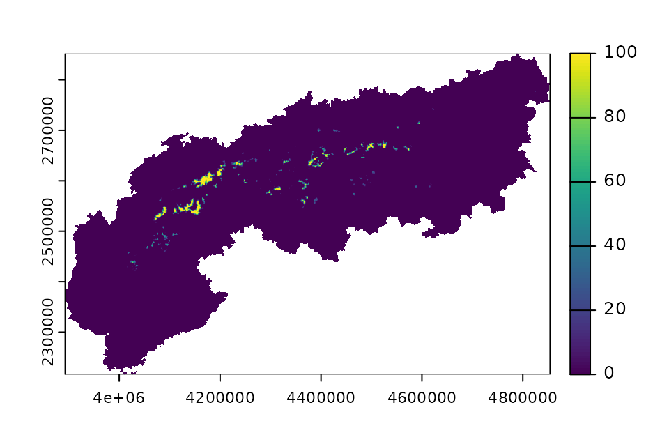
ESA land cover
This function downloads, processes, and extracts variables from the Global 1 km Land Cover dataset (Lo Parrino et al. 2025). Each variable corresponds to a global raster representing a specific land cover class or diversity index derived from very high-resolution imagery.
Available variables:
- wetland - wetlands, swamp, marsh, bog, fen
- bare - bare ground, bare soil, desert, unvegetated
- built - built area, built up, urban, artificial, impervious
- cropland - agriculture, agricultural, crop, crops, farming
- grass - grassland, grass land, meadow, pasture, prairie
- ice - snow, snow and ice, glacier, ice, permafrost
- land_perc - percentage of land, land percentage, land cover fraction, land fraction
- mangrove - mangroves
- moss - mosses, lichen, lichens, moss and lichen
- shrub - shrubland, scrub, bush, thicket
- tree - trees, forest, woodland, canopy, canopy cover
- water - surface water, lake, river, freshwater
- simpson - simpson index, diversity simpson, simpson diversity
- shannon - shannon index, entropy, shannon entropy, shannon diversity
- evenness - evenness index, pielou, pielou evenness, species evenness
processed <- var_get(shape = Alps, crs = 3035) %>%
esalandcover(vars = c("tree", "water"))
plot(processed[[1]])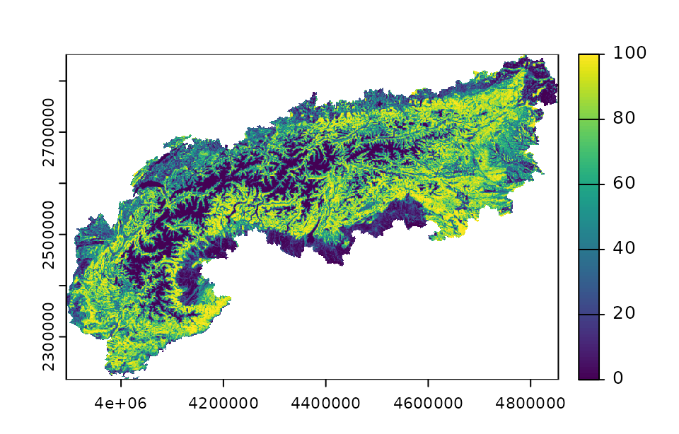
Landscape heterogeneity
This function downloads, processes, and extracts variables from the EarthEnv habitat heterogeneity dataset (1-km resolution) (Tuanmu & Jetz 2015). Each variable corresponds to a global Cloud-Optimized GeoTIFF (COG) representing different metrics of habitat heterogeneity derived from remote sensing data.
Available variables:
First-order statistics:
- cv - coefficient of variation, coeff of variation
- evenness - even
- range - range
- shannon - shannon index, shannon entropy
- simpson - simpson index, simpson diversity
- std - standard deviation, std dev
Second-order statistics (Texture metrics):
- Contrast - contrast
- Correlation - correlation, corr
- Dissimilarity - dissimilarity
- Entropy - entropy, texture entropy
- Homogeneity - homogeneity
- Maximum - maximum, max
- Uniformity - uniformity, uniform
- Variance - variance, var
processed <- var_get(shape = Alps, crs = 3035) %>%
heterogeneity(vars = c("shannon", "cv"))
plot(processed[[1]])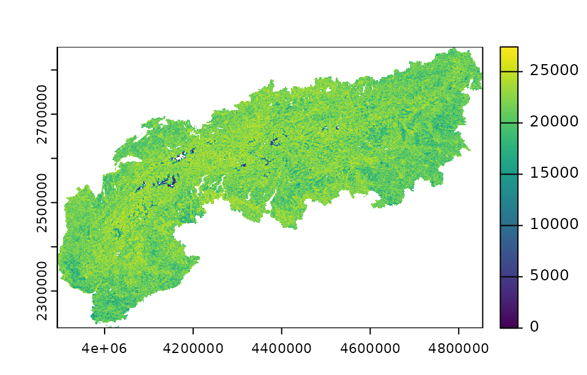
Soil characteristics
This function downloads, processes, and extracts variables from the Harmonized World Soil Database v2.0 (HWSD v2.0) (FAO & IIASA 2023). The variable corresponds to a global raster file at 1 km resolution representing soil types.
Available variables:
- hwsd - soil, type, soiltype, soil type
plot(processed[[1]])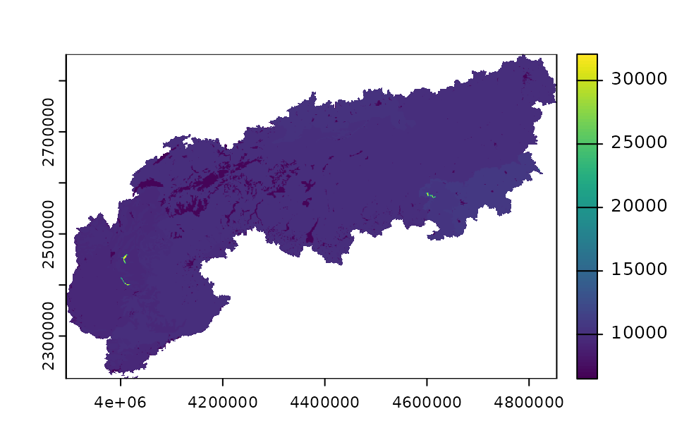
Human impact
SPECTRE
This function downloads, processes, and extracts variables from the SPECTRE – Spatially Explicit ECosysTem ThREats dataset (Branco et al. 2024). Each variable corresponds to a global Cloud-Optimized GeoTIFF (COG) representing a different anthropogenic or climatic threat. When using this source, cite (Branco et al. 2024) and also the original source for each variable (check references in (Branco et al. 2024)).
Available variables:
Land use and human pressure:
- 1_1_MINING_AREA_cog - mining area, mining_area, mining
- 1_2_HAZARD_POTENTIAL_cog - hazard potential, hazard
- 1_3_HUMAN_DENSITY_cog - human density, population, pop
- 1_4_BUILT_AREA_cog - built area, built
- 1_5_ROAD_DENSITY_cog - road density, roads, road
- 1_6_FOOTPRINT_PERC_cog - human footprint, footprint
- 1_7_IMPACT_AREA_cog - impacted area, impact area
- 1_8_MODIF_AREA_cog - modified area, modif area
- 1_9_HUMAN_BIOMES_cog - human biomes, biomes
- 1_10_FIRE_OCCUR_cog - fires, fire
- 1_11_CROP_PERC_UNI_cog - crops uni, crop uni, crop
- 1_12_CROP_PERC_IIASA_cog - crops iiasa, iiasa crops
- 1_13_LIVESTOCK_MASS_cog - livestock, livestock mass
Forest loss:
- 2_1_FOREST_LOSS_PERC_cog - forest loss
- 2_2_FOREST_TREND_cog - forest trend
Light pollution:
- 3_1_LIGHT_MCDM2_cog - light at night, night light, light
Climate change:
- 5_1_TEMP_TRENDS_cog - temperature trends, temp trends
- 5_2_TEMP_SIGNIF_cog - temperature significance, temp signif
- 5_3_CLIM_EXTREME_cog - climate extremes
- 5_4_CLIM_VELOCITY_cog - climate velocity, velocity
- 5_5_ARIDITY_TREND_cog - aridity trend, aridity
processed <- var_get(shape = Alps, crs = 3035) %>%
spectre(vars = c("forest loss", "light at night"))
plot(processed[[1]])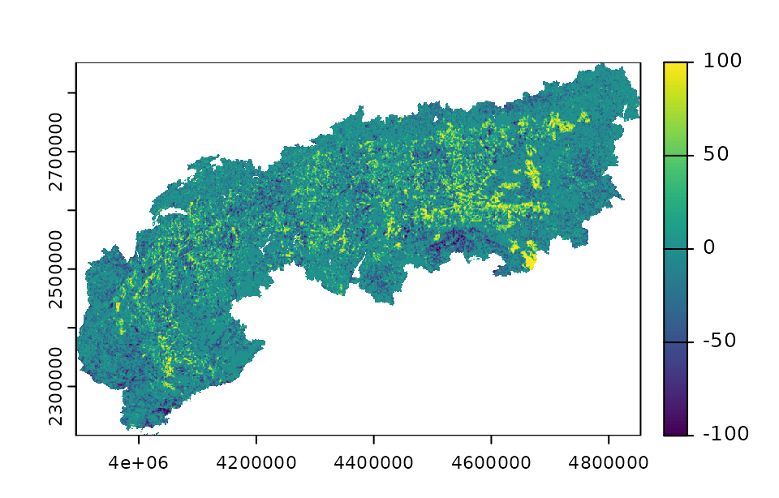
Accessibility
This function downloads, processes, and extracts variables from the Global Accessibility Indicators dataset (A et al. 2019). Each variable corresponds to a global raster representing the travelling time (in minutes) to cities or ports of specific sizes.
Available variables:
Cities:
- cities1 - cities 1, city 1, cities >5m, huge cities, travel time cities 1
- cities2 - cities 2, city 2, cities >1m, large cities, travel time cities 2
- cities3 - cities 3, city 3, medium cities, travel time cities 3
- cities4 - cities 4, city 4, small cities, travel time cities 4
- cities5 - cities 5, city 5, travel time cities 5
- cities6 - cities 6, city 6, travel time cities 6
- cities7 - cities 7, city 7, travel time cities 7
- cities8 - cities 8, city 8, towns, travel time cities 8
- cities9 - cities 9, city 9, small towns, travel time cities 9
- cities10 - cities 10, city 10, aggregated cities 1, travel time cities 10
- cities11 - cities 11, city 11, aggregated cities 2, travel time cities 11
- cities12 - cities 12, city 12, aggregated cities 3, travel time cities 12
Ports:
- ports1 - ports 1, port 1, large ports, travel time ports 1
- ports2 - ports 2, port 2, medium ports, travel time ports 2
- ports3 - ports 3, port 3, small ports, travel time ports 3
- ports4 - ports 4, port 4, very small ports, travel time ports 4
- ports5 - ports 5, port 5, any port, all ports, travel time ports 5
processed <- var_get(shape = Alps, crs = 3035) %>%
accessibility(vars = c("large cities", "ports1"))
plot(processed[[1]])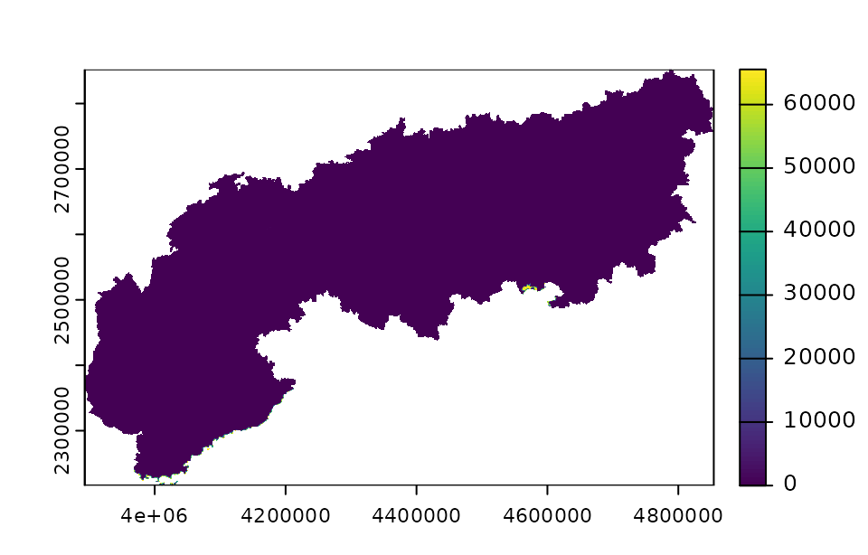
Protected areas
IUCN protected areas
This function downloads, processes, and extracts variables from the World Database of Protected Areas (WDPA) (Protected Planet 2025). Each variable corresponds to a global raster representing different IUCN Management Categories of protected areas.
Available variables:
- WDPA_IA - strict nature reserve, strict reserve, 1a, ia, Ia (IUCN Category Ia)
- WDPA_IB - wilderness area, wilderness, 1b, ib, Ib (IUCN Category Ib)
- WDPA_II - national park, park, 2, ii, II (IUCN Category II)
- WDPA_III - natural monument, monument, 3, iii, III (IUCN Category III)
- WDPA_IV - habitat species management, habitat management, 4, iv, IV (IUCN Category IV)
- WDPA_V - protected landscape, protected seascape, landscape, 5, v, V (IUCN Category V)
- WDPA_VI - sustainable use, natural resources, 6, vi, VI (IUCN Category VI)
- WDPA_ALL - all, combined, full, total, all protected areas (Combined/Full WDPA)
processed <- var_get(shape = Alps, crs = 3035) %>%
protection(vars = c("national park", "WDPA_ALL"))
plot(processed[[1]])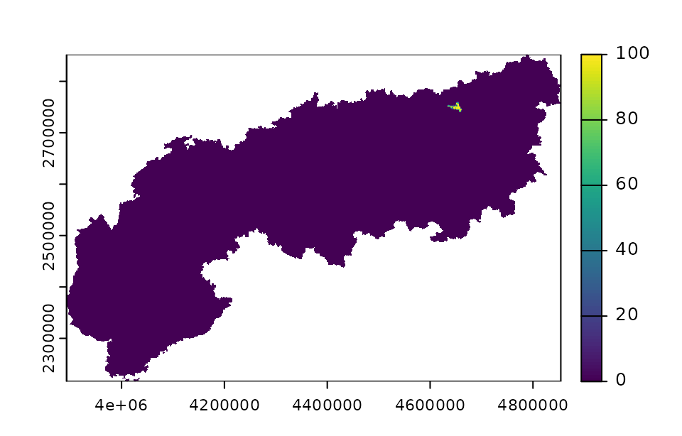
Freshwater environments
This function downloads, processes, and extracts variables from the near-global freshwater-specific environmental variables dataset (Domisch et al. 2015). These variables are available at a 1 km resolution and capture upstream catchment characteristics, including topography, land cover, soil, and climate.
Available variables:
The freshwater() function provides access to 324
near-global 1-km resolution layers. You can filter specific layers from
within these collections using the month argument (for
climatic variables) and algorithm argument (for
topographic, soil, and aggregation methods).
Temperature (monthly)
Use the month argument (1–12) to select specific months.
- monthly_tmin_average.nc – monthly minimum temperature average, min temp average, tmin avg, tmin
- monthly_tmax_average.nc – monthly maximum temperature average, max temp average, tmax avg, tmax
- monthly_tmin_weighted_average.nc – monthly minimum temperature weighted, min temp weighted, tmin weighted
- monthly_tmax_weighted_average.nc – monthly maximum temperature weighted, max temp weighted, tmax weighted
Precipitation
- monthly_prec_sum.nc – monthly upstream precipitation sum, precipitation sum, precip sum, prec
- monthly_prec_weighted_sum.nc – monthly upstream precipitation weighted, precipitation weighted, precip weighted
Hydroclimatic
- hydroclim_average+sum.nc – hydroclimatic variables average, hydroclim average, hydroclim
- hydroclim_weighted_average+sum.nc – hydroclimatic variables weighted, hydroclim weighted
Topography
- elevation.nc – upstream elevation, elevation, dem
- slope.nc – upstream slope, slope
- flow_acc.nc – stream length, flow accumulation, flow
Land cover
- landcover_minimum.nc – upstream landcover minimum, landcover min
- landcover_maximum.nc – upstream landcover maximum, landcover max
- landcover_range.nc – upstream landcover range, landcover range
- landcover_average.nc – upstream landcover average, landcover avg, landcover
- landcover_weighted_average.nc – upstream landcover weighted, landcover weighted
Geology & soil
- geology_weighted_sum.nc – upstream geology, geology weighted, geology
- soil_minimum.nc – upstream soil minimum, soil min
- soil_maximum.nc – upstream soil maximum, soil max
- soil_range.nc – upstream soil range, soil range
- soil_average.nc – upstream soil average, soil avg, soil
- soil_weighted_average.nc – upstream soil weighted, soil weighted
Quality control
- quality_control.nc – quality control, qc
Using the month argument
The month argument is used only for monthly variables (tmin, tmax, prec). Supplying one or several months filters the dataset to those corresponding monthly bands.
Using the algorithm argument
The algorithm argument filters specific statistical bands for topography, flow accumulation, soils, and land cover.
For elevation and slope layers, algorithms map to band order: * min – Band 1 * max – Band 2 * range – Band 3 * avg / mn – Band 4
Flow accumulation: * length – Band 1 (stream length) * acc – Band 2 (catchment accumulation)
For land cover and soil variables, the algorithm matches text patterns in filenames (e.g., “maximum”, “weighted”, “average”). When multiple variables are requested, the algorithm applies to the entire request, so multiple calls may be required if different algorithms are needed.
processed <- var_get(shape = Alps, crs = 3035) %>%
freshwater(vars = c("elevation", "slope", "tmin"), algorithm = "mn", month=12)
plot(processed[[3]])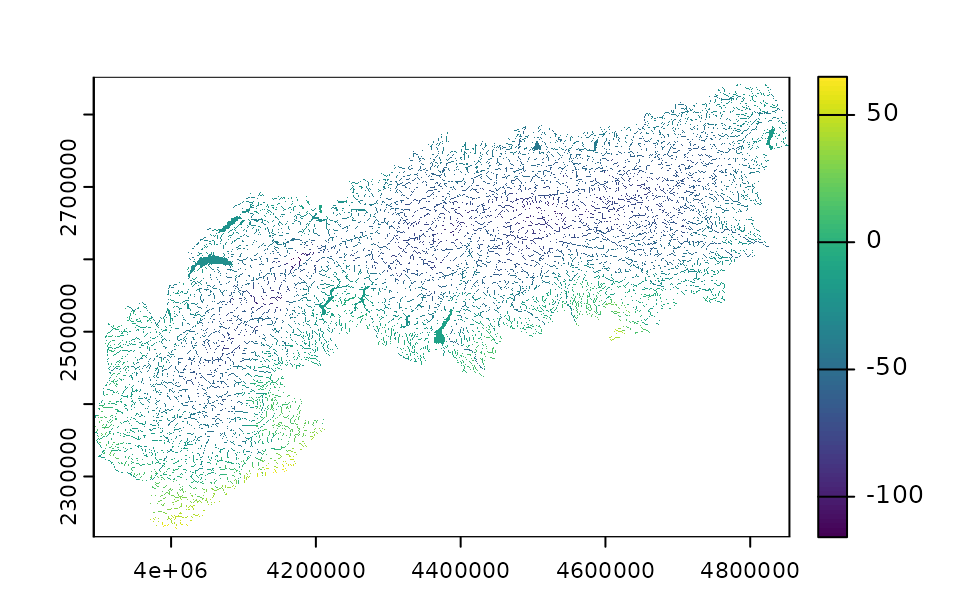
Conclusion
This tutorial provided an overview of all the available sources and functions. Remember to always cite the proper reference for the source used. For further details on the use of specific sources, check the function documentation here or from R after loading the package with ? (e.g., ?spectre).